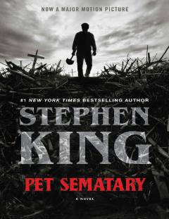

PSO'liklarni tiriltiruvchi qadimiy qabriston haqidagi dahshatli va ta'sirli roman.
Doktor Luis Krid o'z oilasi bilan yangi uyga ko'chib o'tadi va yaqin atrofdagi qadimiy qabriston bilan bog'liq dahshatli sirlarni kashf etadi. Qabriston o'liklarni tiriltirish kuchiga ega ekanligi ma'lum bo'lgach, qahramon o'z yaqinlarini qaytarish uchun xavfli qarorlar qabul qiladi. Bu asar o'lim, yo'qotish va insoniy chegaralar haqidagi chuqur psixologik dahshatli hikoyadir.